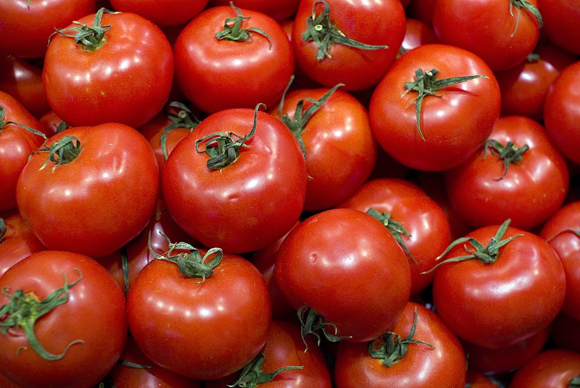

Existem várias teorias sobre como ele chegou à Europa. Uma é que foi trazido para o continente após a conquista espanhola. Depois, da Espanha, foi para a Itália graças às estreitas relações entre as famílias reinantes da época. Outros acreditam que o tomate foi do Peru ou do México para a França.